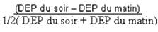

RÉSUMÉ DES CARACTÉRISTIQUES DU PRODUIT
ANSM - Mis à jour le : 27/03/2014
BECLOMETASONE TEVA 50 microgrammes/dose, solution pour inhalation en flacon pressurisé
2. COMPOSITION QUALITATIVE ET QUANTITATIVE
Dipropionate de béclométasone ..................................................................................... 50,00 microgrammes
Pour une dose.
Pour la liste complète des excipients, voir rubrique 6.1.
Solution pour inhalation.
4.1. Indications thérapeutiques
Traitement continu anti-inflammatoire de l'asthme persistant*.
*L'asthme persistant se définit par l'existence de symptômes diurnes plurihebdomadaires et/ou de symptômes nocturnes plus de 2 fois par mois.
Dans l'asthme persistant léger de l'enfant, en l'absence de données définitives sur les conséquences sur la croissance et le métabolisme osseux de l'administration d'un corticoïde par voie inhalée, il est souhaitable de débuter un traitement continu de fond par une cromone avant de passer, en cas d'échec, à un traitement corticoïde inhalé.
4.2. Posologie et mode d'administration
Posologie
La posologie est strictement individuelle. La dose initiale sera déterminée selon la sévérité de la maladie avant traitement et sera ensuite ajustée en fonction des résultats individuels. Il convient de toujours rechercher la posologie minimale efficace.
A titre indicatif.
· dans l'asthme persistant léger à modéré la dose initiale préconisée se situe entre:
chez l'adulte: 500 et 1000 µg par jour,
chez l'enfant: 250 et 500 µg par jour.
(L'asthme persistant léger se définit par l'existence de symptômes diurnes plus de 1 fois par semaine et moins de 1 fois par jour et/ou de symptômes nocturnes plus de 2 fois par mois, un DEP ou un VEMS supérieur à 80 % des valeurs prédites, une variabilité du DEP* comprise entre 20 et 30 %.
L'asthme persistant modéré se définit par l'existence de symptômes diurnes quotidiens, de crises retentissant sur l'activité et le sommeil, de symptômes d'asthme nocturne plus de 1 fois par semaine, une utilisation quotidienne de béta2 mimétiques inhalés d'action brève, un DEP ou un VEMS compris entre 60 et 80 % des valeurs prédites, une variabilité du DEP* supérieure à 30 %.)
· dans l'asthme persistant sévère la dose initiale préconisée se situe jusqu'à:
chez l'adulte: 2000 µg par jour,
chez l'enfant: 1000 µg par jour.
(L'asthme persistant sévère se définit par l'existence de symptômes permanents, de crises fréquentes, de symptômes d'asthme nocturne fréquents, une activité physique limitée par les symptômes d'asthme, un DEP ou un VEMS inférieur à 60 % des valeurs prédites, une variabilité du DEP* supérieure à 30 %).
*La variabilité du s'évalue sur la journée ou sur une semaine.
Remarque: ce dosage n'est pas adapté à l'asthme modéré et sévère. Les formes plus fortement dosées doivent être préférées.
Rythme d'administration
La dose quotidienne peut être répartie en 2 prises par jour.
En cas d'asthme instable, la dose et le nombre de prises devront être augmentés jusqu'à une administration en 3 à 4 prises par jour en fonction de l'état clinique du patient.
Mode d'administration
Inhalation par distributeur avec embout buccal.
Pour une utilisation correcte, il est souhaitable que le médecin s'assure du bon usage de l'appareil.
En cas de mise en évidence chez le patient d'une mauvaise synchronisation main/poumon empêchant la coordination des mouvements inspiration/déclenchement de l'appareil, l'utilisation d'une chambre d'inhalation est indiquée.
Après avoir agité l'appareil et enlevé le capuchon, le patient devra:
· expirer profondément,
· présenter l'embout buccal à l'entrée de la bouche, le fond de la cartouche métallique dirigé vers le haut,
· commencer à inspirer en pressant sur la cartouche métallique tout en continuant à inspirer lentement et profondément.
· retirer l'embout buccal et retenir sa respiration pendant au moins 10 secondes,
· l'embout buccal de l'appareil de propulsion doit, par mesure d'hygiène, être nettoyé après emploi.
Intolérance à ce médicament (survenue de toux ou de bronchospasme après inhalation du produit). Dans ce cas il conviendra d'interrompre ce traitement et de prescrire d'autres thérapeutiques ou d'autres formes d'administration.
4.4. Mises en garde spéciales et précautions d'emploi
Prévenir le patient que ce médicament n'est pas destiné à juguler une crise d'asthme déclarée, mais est un traitement continu de fond de la maladie asthmatique devant être poursuivi régulièrement, quotidiennement et aux doses prescrites, et dont les effets sur les symptômes de l'asthme ne se feront sentir qu'au bout de quelques jours à quelques semaines.
Si en dépit d'un traitement bien conduit une dyspnée paroxystique survient, on doit avoir recours à un bronchodilatateur bêta2 mimétique par voie inhalée d'action rapide et de courte durée pour traiter les symptômes aigus. Il conviendra d'en informer le patient et de lui préciser qu'une consultation médicale immédiate est nécessaire si, dans ce cas, le soulagement habituellement obtenu n'est pas rapidement observé après inhalation du bronchodilatateur bêta2 mimétique.
Si un patient développe en quelques jours une augmentation rapide de sa consommation en bronchodilatateurs bêta2 mimétiques d'action rapide et de courte durée par voie inhalée, on doit craindre (surtout si les valeurs du débit-mètre de pointe s'abaissent et/ou deviennent irrégulières) une décompensation de sa maladie et la possibilité d'une évolution vers un asthme aigu grave (état de mal asthmatique).
Le médecin devra également prévenir le patient de la nécessité dans ce cas d'une consultation immédiate. La conduite thérapeutique devra alors être réévaluée.
Le patient doit être averti que l'amélioration de son état clinique ne doit pas conduire à une modification de son traitement, en particulier à l'arrêt de la corticothérapie par voie inhalée, sans avis médical.
L'attention des sportifs sera attirée sur le fait que cette spécialité contient un principe actif pouvant induire une réaction positive des tests pratiqués lors des contrôles antidopage.
Précautions d'emploi
En cas d'infection bronchique ou de bronchorrhée abondante, un traitement approprié est nécessaire afin de favoriser la diffusion optimale du produit dans les voies respiratoires.
En cas de déstabilisation de l'asthme, ou de contrôle insuffisant des exacerbations d'asthme malgré des doses maximales de corticoïdes par voie inhalée, un traitement par corticothérapie par voie générale en cure courte doit être envisagé. Il est alors nécessaire de maintenir la corticothérapie inhalée associée au traitement par voie générale.
Des effets systémiques peuvent apparaître lors de traitement au long cours avec des doses élevées de corticoïdes par voie inhalée. Le risque de retentissement systémique reste néanmoins moins important avec les corticoïdes inhalés qu’avec les corticoïdes oraux. Les effets systémiques possibles sont syndrome de Cushing ou symptômes cushingoïdes, amincissement cutané, hématomes sous cutanés, insuffisance surrénalienne, retard de croissance chez les enfants et les adolescents, diminution de la densité osseuse, cataracte et glaucome et plus rarement, troubles psychologiques et du comportement comprenant hyperactivité psychomotrice, troubles du sommeil, anxiété, dépression ou agressivité (en particulier chez l’enfant).
Il convient donc de toujours veiller à rechercher la posologie minimale efficace permettant de maintenir le contrôle de l’asthme.
L'administration conjointe de corticoïdes par voie inhalée chez les asthmatiques sous corticothérapie orale au long cours (patients corticodépendants) ne dispense pas des précautions nécessaires lors d'une réduction des doses de corticoïde par voie orale. Celles-ci seront diminuées très progressivement et le sevrage devra être effectué sous surveillance médicale attentive (à la recherche de l'apparition de signes d'insuffisance surrénale aiguë ou subaiguë) se prolongeant au-delà de l'arrêt de la corticothérapie par voie générale.
4.5. Interactions avec d'autres médicaments et autres formes d'interactions
Les données disponibles à ce jour ne laissent pas supposer l'existence d'interactions cliniquement significatives.
Dipropionate de béclamétasone:
Chez l'animal, l'expérimentation met en évidence un effet tératogène des corticoïdes variable selon les espèces.
Dans l'espèce humaine, les études épidémiologiques n'ont décelé aucun risque malformatif lié à la prise de corticoïdes lors du premier trimestre bien qu'il existe un passage transplacentaire. Lors de maladies chroniques nécessitant un traitement tout au long de la grossesse, un léger retard de croissance intra-utérin est possible. Une insuffisance surrénale néo-natale a été exceptionnellement observée après corticothérapie à dose élevée par voie systémique.
Il semble justifié d'observer une période de surveillance clinique (poids, diurèse) et biologique du nouveau-né.
Norflurane (Tétrafluoroéthane ou HFA 134a): gaz propulseur:
L'étude des fonctions de reproduction menée chez l'animal n'a pas mis en évidence d'effet néfaste de l'administration de Norflurane (tétrafluoroéthane ou HFA 134a) contenu dans ce médicament. En l'absence d'effet tératogène chez l'animal, un effet malformatif dans l'espèce humaine n'est pas attendu. Il n'existe néanmoins actuellement pas de données en nombre suffisant, pour évaluer un éventuel effet malformatif ou fœtotoxique du norflurane lorsqu'il est administré pendant la grossesse.
Les corticoïdes passent dans le lait.
Le passage du gaz propulseur (HFA 134a) et de ces métabolites dans le lait n'est pas connu.
4.7. Effets sur l'aptitude à conduire des véhicules et à utiliser des machines
Sans objet.
· possibilité de survenue de candidose oropharyngée. Elle cède le plus souvent spontanément ou à un traitement approprié et il est exceptionnel qu'elle nécessite l'arrêt de la corticothérapie par voie inhalée. Son risque d'apparition augmente avec la dose utilisée et le nombre de prises. Il peut être prévenu par rinçage de la bouche à l'eau après inhalation;
· possibilité de survenue de gêne pharyngée, dysphonie, de raucité de la voie, pouvant être prévenus par rinçage de la bouche après inhalation du produit;
· comme avec d'autres produits inhalés, possibilité de survenue de toux et rarement de bronchospasme à la suite de l'inhalation. Dans ce cas, il conviendra d'interrompre le traitement et de prescrire d'autres thérapeutiques ou d'autres formes d'administration.
Effets systémiques
· Des effets systémiques peuvent apparaitre lors de traitement au long cours avec des doses élevés (voir rubrique 4.4).
· Ont été décrits avec la corticothérapie par voie inhalée des observations d'amincissement cutané, d'hématomes sous-cutanés, de dépression des fonctions surrénaliennes biologiques (diminution du cortisol plasmatique et de la cortisolurie des 24 heures) et de raréfaction du tissu osseux. Les conséquences cliniques d'une administration à long terme notamment sur le tissu osseux et la croissance ne sont pas clairement établies. L'administration de fortes doses au long cours peut donc nécessiter une surveillance en particulier chez les enfants et les sujets âgés.
En l'état actuel des connaissances, bien que la recherche de la posologie minimale efficace soit toujours recommandée, le risque à considérer en priorité est celui d'un contrôle insuffisant de l'asthme et devra toujours être pesé face à celui du retentissement systémique.
· Fréquence très rare : cataracte et glaucome.
· Troubles psychiatriques :
Fréquence indéterminée : hyperactivité psychomotrice, troubles du sommeil, anxiété, syndrome dépressif, agressivité, troubles du comportement (principalement observés chez l’enfant).
L'emploi de ce médicament à des doses très supérieures aux doses recommandées est le reflet d'une aggravation de l'affection respiratoire nécessitant une consultation rapide pour réévaluation thérapeutique.
5. PROPRIETES PHARMACOLOGIQUES
5.1. Propriétés pharmacodynamiques
Classe pharmacothérapeutique:
GLUCOCORTICOIDE PAR VOIE INHALEE.
ANTIASTHMATIQUE
(R: Système respiratoire)
En inhalation buccale, le dipropionate de béclométasone exerce un effet anti-inflammatoire essentiellement local. Son effet freinateur sur l'axe hypophysosurrénalien ne se manifeste qu'à une posologie égale ou supérieure à 2000 µg par 24 heures.
5.2. Propriétés pharmacocinétiques
Dipropionate de béclométasone:
Une partie de la dose, dépendant largement d'une correcte utilisation de l'appareil, est déglutie et éliminée par les fèces. L'autre pénètre dans les bronches où elle exerce ses effets, puis passe dans la circulation générale.
Le dipropionate de béclométasone est métabolisé dans le foie en monopropionate et béclométasone-alcool puis est excrété sous forme de métabolites dans la bile et les urines.
Norflurane (Tétrafluoroéthane ou HFA 134a): gaz propulseur:
Après inhalation d'une bouffée, l'absorption de HFA 134a est très faible et rapide, la concentration maximale est atteinte en moins de 6 minutes.
Un très faible métabolisme hépatique avec formation d'acide trifluoroacétique et trifluorocétaldéhyde a été mis en évidence chez l'animal (souris et rats).
Néanmoins, les études cinétiques réalisées chez des patients après administration de HFA 134a en situation pathologique, n'ont pas mis en évidence la formulation d'acide trifluoroacétique.
5.3. Données de sécurité préclinique
Non renseigné.
Gaz propulseur: norflurane (tétrafluoroéthane ou HFA 134a).
Sans objet.
3 ans.
6.4. Précautions particulières de conservation
Récipient sous pression:
· ne pas exposer à une chaleur supérieure à 30°C, ni au soleil,
· ne pas percer,
· ne pas jeter au feu même vide.
6.5. Nature et contenu de l'emballage extérieur
200 doses en flacon pressurisé (Aluminium) muni d'une valve doseuse (aluminium, acier inoxydable, caoutchouc synthétique nitrile) et d'un embout buccal.
6.6. Précautions particulières d’élimination et de manipulation
Pas d'exigences particulières.
7. TITULAIRE DE L’AUTORISATION DE MISE SUR LE MARCHE
100-110 Esplanade du Général de Gaulle
92931 PARIS LA DEFENSE CEDEX
8. NUMERO(S) D’AUTORISATION DE MISE SUR LE MARCHE
· 377 162-0: 200 doses en flacon pressurisé (Aluminium) avec valve doseuse et embout buccal.
9. DATE DE PREMIERE AUTORISATION/DE RENOUVELLEMENT DE L’AUTORISATION
[à compléter par le titulaire]
10. DATE DE MISE A JOUR DU TEXTE
[à compléter par le titulaire]
Sans objet.
12. INSTRUCTIONS POUR LA PREPARATION DES RADIOPHARMACEUTIQUES
Sans objet.
Liste I.